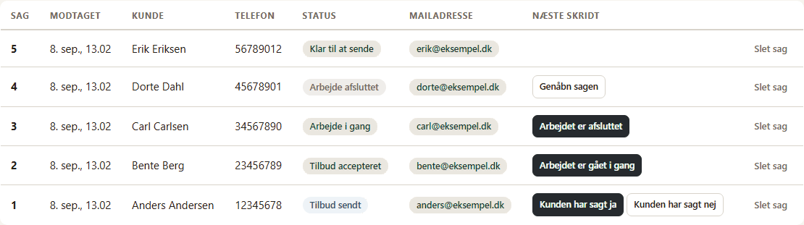
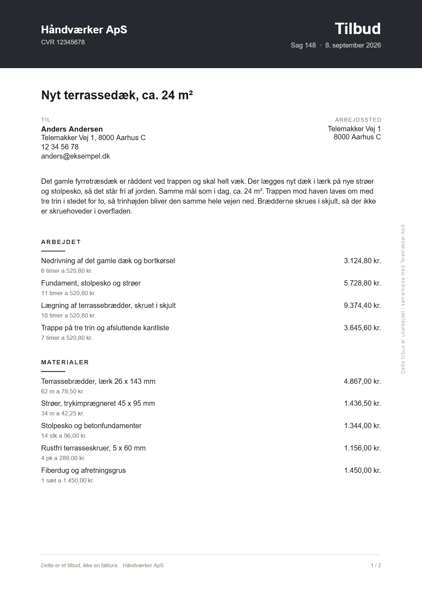
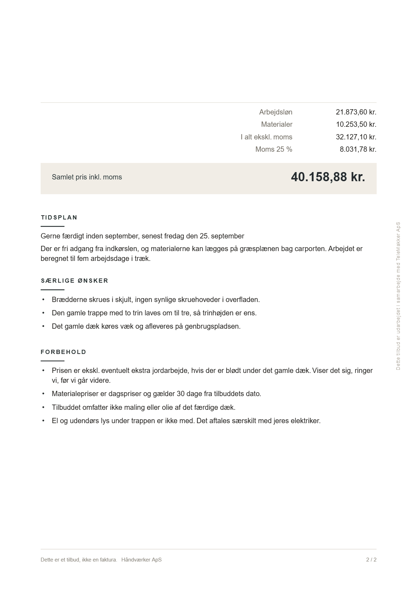

Tilbudsstyring til håndværkere
Når du lægger på, ligger tilbuddet klar med dine egne priser, dit logo og dit CVR. Det går ud samme dag, før kunden når at ringe til en anden.
Anders Hej, du taler med Anders fra Håndværker ApS.
Morten Hej Anders. Jeg vil gerne have lavet et nyt badeværelse.
Morten Cirka ti kvadratmeter. Bruseniche, nyt toilet og håndvask, og fliser på gulv og vægge.
Anders Det kan vi sagtens. Hvornår skal det stå færdigt?
Morten Gerne inden jul.
Hej Morten. Kan du sende et par billeder af badeværelset, så jeg kan se forholdene?
Sådan virker det
Fra kunden ringer, til tilbuddet er ude. Du skal ikke lære et program, og du skal ikke taste noget.
Du tager telefonen, som du altid har gjort. Du spørger kunden, om samtalen må skrives ned.
Dit eget nummerDu skal ikke tage noter eller huske noget. Også det, du plejer at glemme, inden du når hjem.
Mens I talerMed dine egne priser fra grossisten, dit logo og dit CVR. Også forbeholdene, I aftalte.
Når du lægger påTil kunden fra din egen mail, eller som kladde i dit regnskab. Du læser igennem og trykker.
Samme dagHvad er din tid værd?
Vi finder ikke på et tal. Træk i dine egne, så regner den.
Du sparer om året
Det får du
01 · Fra samtalen
Kunden har ringet til tre håndværkere. Den, der er først ude med et tilbud, der ser ordentligt ud, vinder opgaven oftest. Her er du den første, uden at skulle sætte dig ned om aftenen.

Rød, gul, grøn. Du kan se det på et sekund.02 · Ude på pladsen
Kom der ikke noget opkald, eller stod I bare og snakkede om det ude på stedet? Så tager du det selv, mens du står der.
03 · Billederne og beskrivelsen
Du sender en sms, og kunden lægger selv billederne på sagen. Du skal ikke køre forbi for at se, hvor stort det er. Og sammen med det, I talte om, har du hele opgaven beskrevet, så du husker, hvad kunden sagde, også om fjorten dage.
Sådan ser det ud hos kunden
Begge sider af et rigtigt tilbud, bygget ud fra en samtale om et terrassedæk.


De står i båndet øverst. Kunden ser dit firma på dokumentet.
Materialerne fra din egen liste hos grossisten. Din timepris på timerne.
Et dansk håndværkertilbud med tidsplan og forbehold. Ikke et mødereferat.
Linjer, moms og samlet pris er regnet ud. Du læser igennem.
Dit fag
Det er dét, der er problemet. Vælg dit fag, så viser vi, hvordan det ser ud hos en som dig.
Det lover vi aldrig at lave om på
Det er nemmere at love noget end at holde sig fra det. Her er, hvad systemet ikke har lov til.
Kun beskeden om samtykke er automatisk. Resten er dig.
Blev en pris ikke nævnt i samtalen, står feltet tomt. Det bliver aldrig udfyldt med et kvalificeret gæt.
Siger kunden nej, gemmes der ingen tekst. Opkaldet går stadig igennem.
Der går aldrig noget til en kunde, uden at du har trykket på knappen.
Det, der står på bilen og visitkortet, bliver. Du skifter ingenting.
Nogle opgaver er for særlige til et udkast. Så skriver du det selv, som du plejer.
Er du håndværker? Så ring
Du får fat i TeleMakker. Vi kommer forbi og viser det på en af dine egne samtaler. Det tager et kvarter, og du skal ikke skrive under på noget.
kontakt@telemakker.dkEller skriv dit nummer
Tak
Vi har fået dit nummer og ringer i almindelig arbejdstid. Passer det dårligt, så skriv til kontakt@telemakker.dk, så aftaler vi et tidspunkt.
Vi er Mikkel Durup og Kasper Faurschou, og vi har set det samme hos de håndværkere, vi kender. Dagen går med det arbejde, kunderne betaler for. Aftenen går med det, ingen betaler for: tilbud, mails og papirer. Ét tilbud tager let tre kvarter at regne og skrive, og den tid er hverken fritid eller timer, der kan faktureres. Derfor byggede vi TeleMakker. Samtalen med kunden bliver selv til et tilbud med dine egne priser, og du bruger fem minutter på at rette det i stedet for tre kvarter på at skrive det. Resten af tiden er din: til flere opgaver eller til at holde fri.
Vi ejer TeleMakker sammen. Ringer du, får du fat i en af os, og det er os, der sætter det op hos dig og svarer, når du har et spørgsmål bagefter. TeleMakker ApS, CVR 46720253. Handelsbetingelser, privatlivspolitik og databehandleraftale er udarbejdet med advokat.